Plano de Estudo
A seguir, apresentam-se os tópicos que você estudará nesta unidade:
- Aplicações das Redes de Computadores
- Tipos de Redes de Computadores
- Hardware e Software de Rede
- Meios de Transmissão
- Topologias de Redes
APLICAÇÕES DAS REDES DE COMPUTADORES
Neste tópico, abordaremos conceitos de redes, incluindo surgimento, finalidade e aplicações, além de sua colaboração com as redes internet, intranet e extranet.
Redes de computadores são interligações de dispositivos, seja por conexões físicas (cabeada) ou sem fio (wireless), com o objetivo de trocar informações e compartilhar recursos (MORIMOTO, 2011).
As primeiras redes de computadores surgiram na década de 60 para transferir informações entre computadores, substituindo o uso de cartões perfurados. Essas redes podem ser encontradas em diversos ambientes, como residencial, comercial e universitário, contanto que haja pelo menos dois dispositivos físicos ou portáteis.
Um exemplo prático é um shopping que oferece rede wireless aos clientes, permitindo que as lojas forneçam um atendimento especial, como mensagens de boas-vindas e ofertas exclusivas.
Outro exemplo é o compartilhamento de impressoras em empresas, que economiza em despesas de compra, acessórios e manutenção, reduzindo impressões desnecessárias e melhorando a eficiência.
O compartilhamento de recursos economiza tempo e melhora a qualidade do serviço, permitindo ajustes em tempo real na escrita e padrões, acelerando e controlando a qualidade da produção. Detalhes sobre o uso da nuvem serão abordados na unidade V (Introdução ao Cloud Computing e virtualização).
Redes de computadores em residências conectam dispositivos como desktops, notebooks, tablets e smartphones, possibilitando a troca de informações, jogos em rede e navegação na internet. Essas redes são comumente chamadas de LAN (Local Area Network) e serão explicadas posteriormente.
Empresas e universidades usam redes de computadores para conectar departamentos e gerenciar usuários, compartilhar arquivos e serviços. Também é possível conectar redes em longas distâncias, conhecidas como intranet e extranet, assuntos que serão discutidos mais adiante.
Internet e Redes
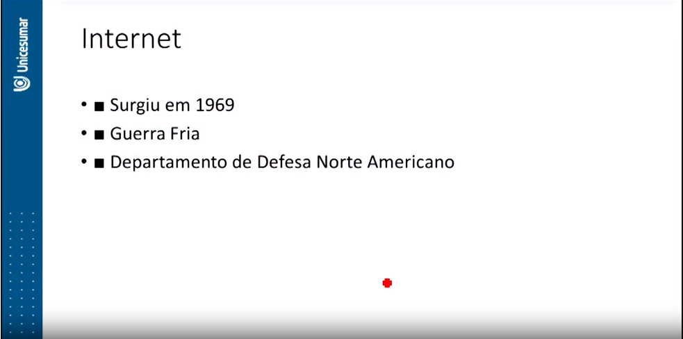
A internet é um conjunto de redes de computadores conectadas pelo mundo inteiro, com o objetivo de compartilhamento de informações, sejam elas textuais, por vídeos ou imagens.
De acordo com os autores Tanenbaum e Wetherall (2011) e Ross e Kurose (2005), a internet surgiu em 1969 pela necessidade de comunicação entre laboratórios do Departamento de Defesa do governo norte-americano.
Arpanet
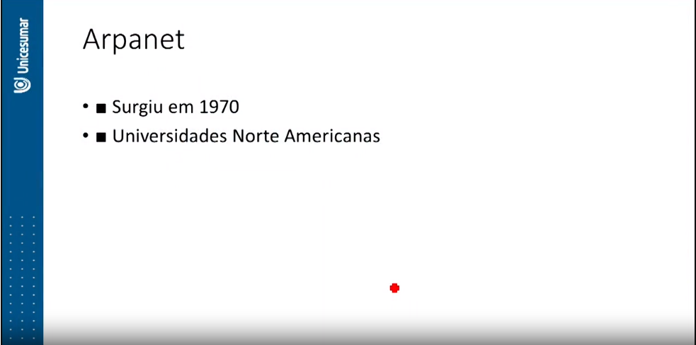Desde 1970 até os dias atuais, os computadores, os softwares e toda a infraestrutura de redes evoluíram muito, proporcionando à Internet mais agilidade, segurança e uma ampla gama de serviços e informações disponibilizados.
Para conectar-se à internet, basta ter um dispositivo de conexão, um dispositivo de acesso e navegação, os dados de acesso, como usuário e senha, e um navegador (browser).
A internet que conhecemos hoje é bem diferente de seu início. Não havia interatividade, usabilidade e navegabilidade, pois tudo era baseado em modo texto, de forma estática.
Conforme estudos de Bittencourt e Isotani (2015), a Web nasceu em 1991, seu criador foi Tim Berners Lee, que desenvolveu uma linguagem para interligar computadores do laboratório e outras instituições de pesquisa e exibir documentos científicos de forma simples e fácil de acessar.
A linguagem de programação nativa da internet podemos chamar de HTML (Hypertext Markup Language – Linguagem de Hipertexto de marcação), mesmo que seja uma linguagem interpretativa, pois é por meio dessa e de outras linguagens de programações (PHP, JAVA, ASP etc.), recursos de estilo de páginas (CSS), recursos de efeitos (JS, JQUERY) e de banco de dados (MYSQL, POSTGRE, ORACLE etc.), que podemos encontrar desde sites estáticos (parados sem interação com usuário) a sites dinâmicos, com a interação do usuário.
Dispomos hoje na internet serviços de correio eletrônico, blogs, portais de notícias, sites de comércio eletrônico, ensino a distância, portais de vídeos, redes sociais, livrarias digitais, compra de passagens terrestres e aéreas, sites de pesquisa, base de dados para pesquisa acadêmica, web conferência, voz sobre IP, internet banking, enfim, temos tantos serviços disponibilizados na internet, que ficaria difícil relacionar todos eles em um livro.
As páginas WEB são conectadas entre si por meio de hyperlinks (ou links), que podem ser texto ou imagem. Quando você clica em um link, será redirecionado para algum endereço URL (Uniform Resource Locator) indicado.
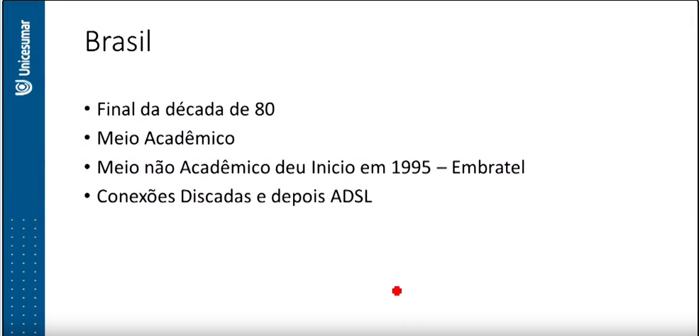No Brasil, o site REGISTRO.BR é o responsável pelo registro de todos os sites e domínios. Para ter um domínio, é necessário ter identificação física e jurídica e um local de hospedagem.
A internet só chegou ao Brasil no final da década de 80 (1988). Os primeiros computadores conectados foram os centros acadêmicos de São Paulo e Rio de Janeiro, com intuito de compartilhar as pesquisas científicas (TANENBAUM; WETHERALL, 2011).
Intranet
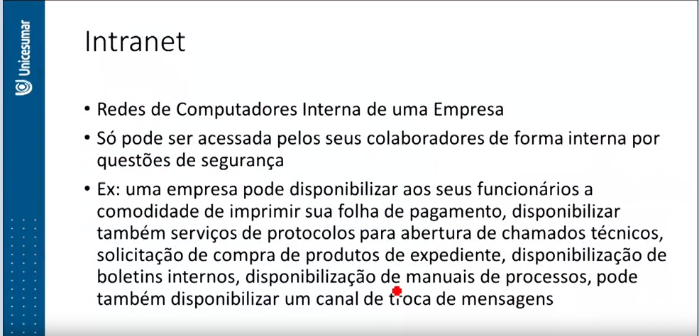 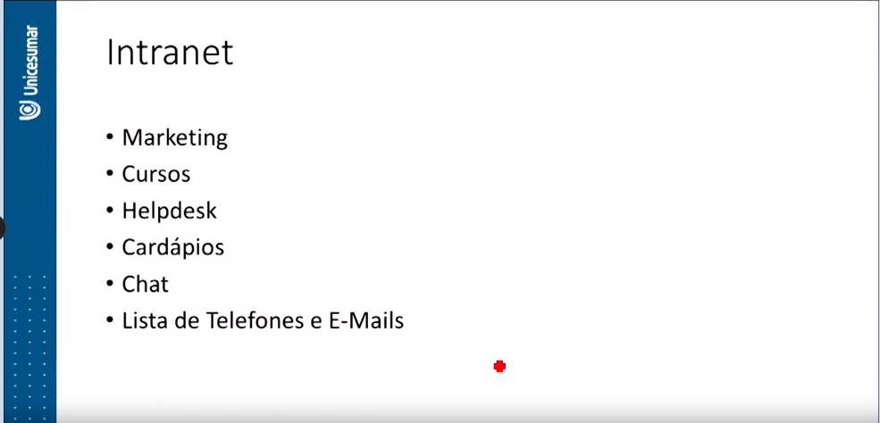
Resumo carlos sobre intranet:
A intranet é uma rede de computadores interna de uma empresa que não está conectada à internet e tem como objetivo principal o compartilhamento de informações e serviços entre os funcionários ou colaboradores da empresa. Essas redes são protegidas por questões de segurança e oferecem várias funcionalidades, como impressão de folhas de pagamento, abertura de chamados técnicos, solicitação de compras, distribuição de boletins internos, manuais de processos e até mesmo mensagens para facilitar o treinamento de novos colaboradores.
A intranet é uma ferramenta de comunicação fundamental nas corporações, permitindo um fluxo constante de dados, incluindo documentos, formulários e notícias da empresa, com o objetivo de reduzir custos e agilizar a disseminação de informações. Ela funciona através de navegadores de internet e servidores de hospedagem web privados, utilizando os protocolos da internet (TCP/IP). Além disso, as intranets podem integrar diversos sistemas, como sistemas ERP, SIG e CRM, para melhorar a eficiência operacional da empresa.
Extranet
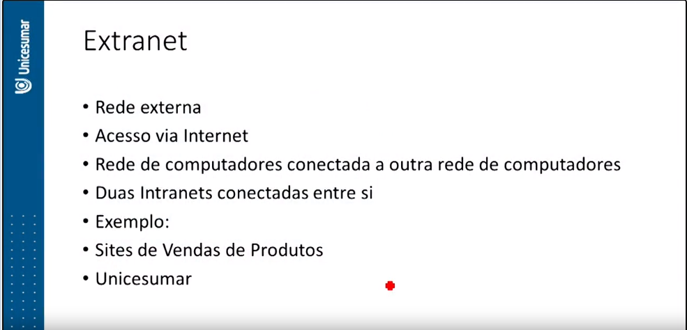
A rede Extranet refere-se a uma rede de computadores que é conectada com alguma outra rede de computadores externa, utilizando a internet como meio de comunicação.
resumo carlos sobre Extranet
A extranet é uma rede de computadores que se conecta a outras redes externas, utilizando a internet como meio de comunicação, garantindo a segurança por meio de autenticação de login e senha. Um exemplo prático de extranet é quando uma empresa (A) vende produtos e precisa interagir com sua fornecedora (B). Quando a loja A não tem um produto em estoque, seu sistema se comunica automaticamente com a empresa B para fazer um pedido em nome do cliente. Isso ocorre de forma automatizada, conectando as redes das duas empresas.
Para que essa comunicação aconteça, as duas intranets devem seguir os mesmos padrões de troca de informações, mantendo o relacionamento com seus parceiros, clientes e fornecedores.
As duas empresas devem possuir sua própria Intranet, ambas com sua gerência, e devem também estar interligadas para troca de informações, pedidos, pagamentos, emissão de relatórios etc. O resultado desta transação fornece às altas gerências subsídios para melhor atender seus clientes em determinadas épocas do ano, pois toda transação realizada resulta em um registro de conhecimento e em uma base de dados, para o relacionamento comercial produtivo entre ambos.
Outro exemplo de acesso pela rede extranet são as conexões remotas realizadas normalmente pela alta gerência da organização, pois é comum que estes gerentes fiquem a maior parte do tempo fora da organização em reuniões, e precisam estar informados de todas as transações da empresa para que possam tomar decisões a qualquer momento. Geralmente, tais gerentes têm acesso ao sistema SAD (Sistema de Apoio a Decisão), que fornece subsídios para tomadas de decisões.
Sendo assim as redes intranet e extranet, são utilizadas constantemente pelas empresas de pequeno, médio e grande porte. Para que essas redes funcionem de forma correta, no próximo tópico iremos estudar os tipos de redes de computadores e você perceberá as diferenças entre cada rede disposta, podendo fazer uma correlação em qual a intranet e a extranet se enquadram.
Tipos de Redes de Computadores
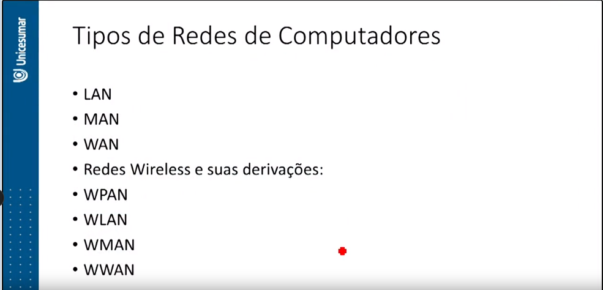As redes locais (LAN), redes metropolitanas (MAN) e redes de longa distância (WAN) são tipos de redes de computadores que variam em alcance geográfico.
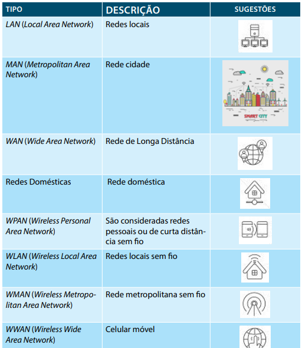LAN
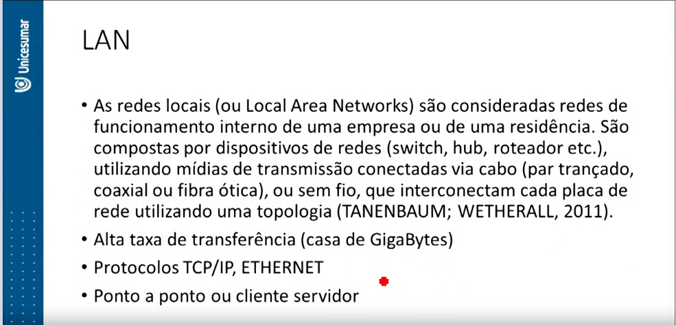As redes locais (Local Area Networks) são redes de funcionamento interno de uma empresa ou residência. Elas consistem em dispositivos de rede, como switches, hubs e roteadores, que utilizam diferentes meios de transmissão, como cabo (par trançado, coaxial ou fibra ótica) ou conexões sem fio, para interconectar placas de rede em uma topologia específica.
Essas redes têm alta taxa de transferência, podendo chegar a gigabytes, e utilizam o protocolo TCP/IP para a comunicação entre dispositivos, juntamente com o método de transporte Ethernet.
Uma rede local pode abranger uma pequena área geográfica, variando de alguns metros a quilômetros, e permite que os usuários executem diversas tarefas, desde tarefas simples, como edição de texto, até conexões remotas locais a partir de suas estações de trabalho ou dispositivos móveis.
Para o funcionamento adequado de uma LAN, são necessárias estações de trabalho ou dispositivos móveis, meios de transmissão, dispositivos de rede, protocolos de comunicação e o uso de servidores. As redes locais podem ser configuradas de duas maneiras: como redes ponto a ponto (peer-to-peer ou P2P), onde cada dispositivo pode ser um servidor, ou como redes "cliente/servidor", onde um servidor dedicado fornece serviços de rede, como autenticação, backup, impressão, firewall e proxy, tornando a administração e manutenção mais eficientes.
MAN
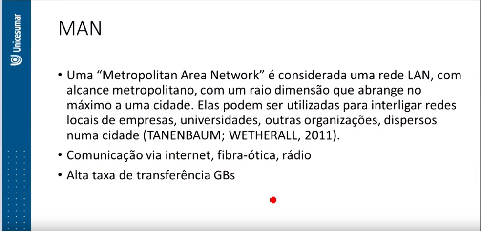Uma "Metropolitan Area Network" (MAN) é uma rede LAN com alcance metropolitano, abrangendo no máximo uma cidade. Elas são utilizadas para interligar redes locais de empresas, universidades e outras organizações localizadas em uma cidade.
Normalmente, as redes MAN são interligadas por meio de internet, TV a cabo, fibra ótica ou rádio, o que permite alcançar altas velocidades de transmissão, muitas vezes na faixa de Gbits.
WAN
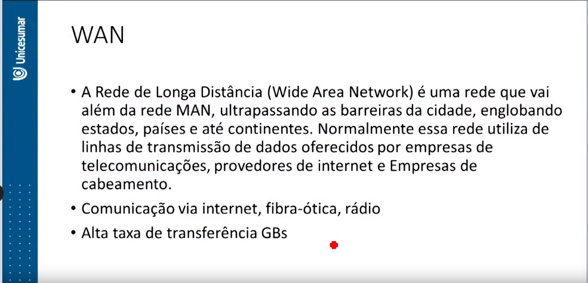A Wide Area Network (WAN), ou Rede de Longa Distância, é uma rede que abrange áreas maiores do que as redes MAN, estendendo-se para além das fronteiras da cidade, englobando estados, países e até continentes.
Normalmente, essa rede utiliza linhas de transmissão de dados fornecidas por empresas de telecomunicações, provedores de internet e empresas de cabeamento. A WAN está em constante atualização devido às novas tecnologias de telecomunicações, suportando transmissões de áudio, vídeo, teleconferências, Voz-IP em tempo real (Real Time) e muito mais.
O limite de velocidade desta rede é determinado pelos computadores ou dispositivos conectados, uma vez que a mídia de transmissão atualmente utilizada é a fibra ótica, que viaja à velocidade da luz.
Redes Domesticas
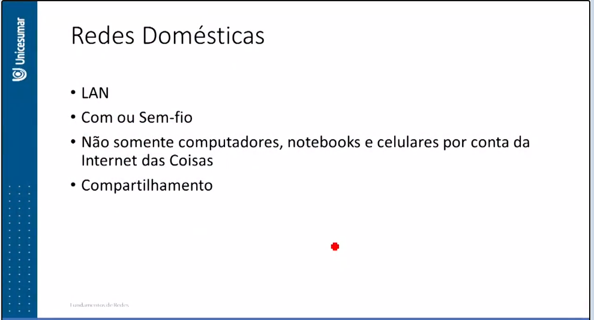O uso de redes domésticas está em constante expansão. Imagine ter uma rede em sua própria casa, onde você pode compartilhar impressoras, jogar em rede com amigos e familiares, e realizar diversas outras tarefas. Para isso, você precisa de uma rede LAN (Local Area Network), que pode ser conectada por fio ou sem fio (Wireless).
Além de computadores, notebooks, smartphones e tablets, hoje em dia, dispositivos da Internet das Coisas (IoT) também se conectam a essas redes domésticas, incluindo televisores e geladeiras, entre outros (mais informações sobre este assunto serão abordadas na Unidade V).
Redes Wireless
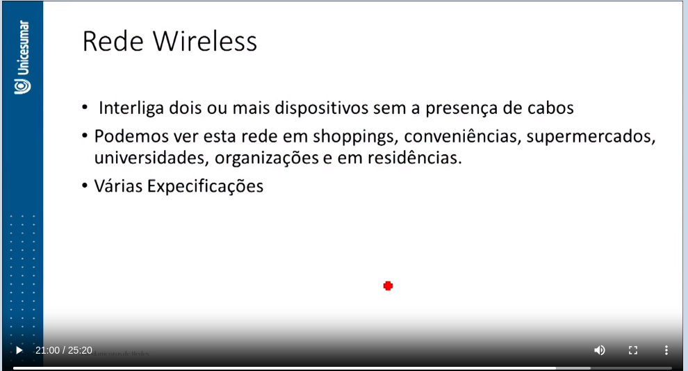A rede Wireless, ou sem fio, é um meio de transmissão que conecta dois ou mais dispositivos sem a necessidade de cabos. Essa rede é amplamente utilizada em locais como shoppings, conveniências, supermercados, universidades, organizações e residências.
Devido à facilidade e praticidade das redes sem fio, elas são uma escolha ideal para redes domésticas. Anteriormente, em nossas residências, tínhamos modems, HUBs e cabos espalhados nos cômodos onde eram necessários computadores. Hoje, com as redes sem fio, podemos usar um único dispositivo, chamado modem roteador, conectando apenas o cabo telefônico e o de energia, e automaticamente estamos interligados.
Além da comunicação sem fio, existem outras formas de comunicação, como satélite, rádio, código Morse e infravermelho, todas com o mesmo objetivo: a troca de mensagens entre dispositivos. As redes sem fio também são utilizadas fora de residências ou empresas e têm várias classificações, como WPAN, WLAN, WMAN e WWAN, cada uma com detalhes específicos.
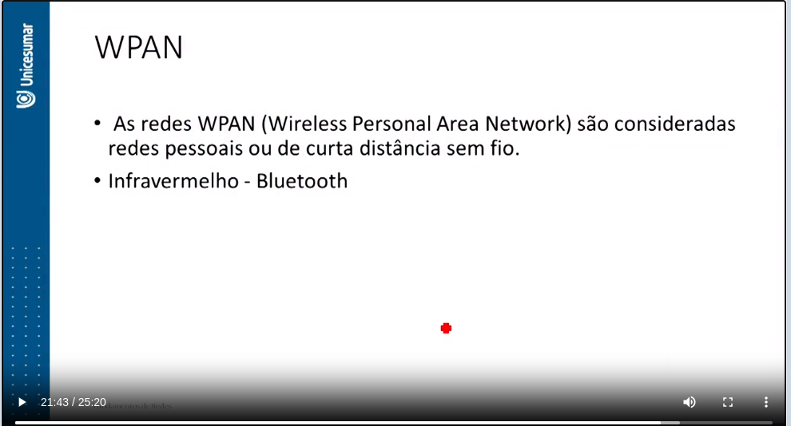As redes WPAN (Wireless Personal Area Network), ou redes pessoais sem fio de curto alcance, são restritas em termos de distância e são frequentemente usadas com tecnologias como infravermelho ou Bluetooth.
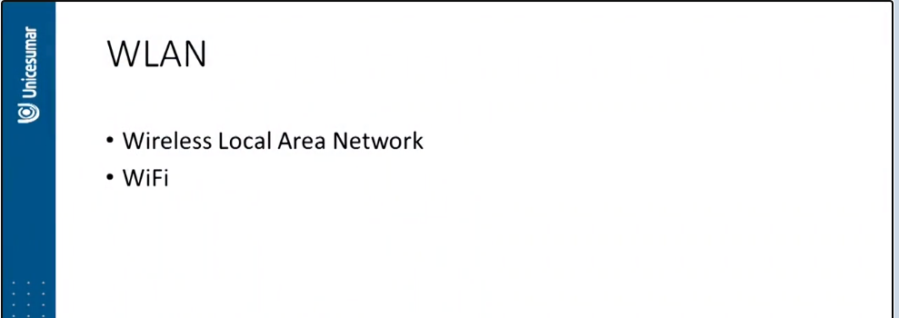As redes WLAN (Wireless Local Area Network) são projetadas para uso em redes domésticas, redes particulares de organizações, shoppings, restaurantes, entre outros. Essas redes eliminam a necessidade de cabos para conexão com dispositivos e permitem o compartilhamento do sinal Wi-Fi, oferecendo benefícios aos usuários.
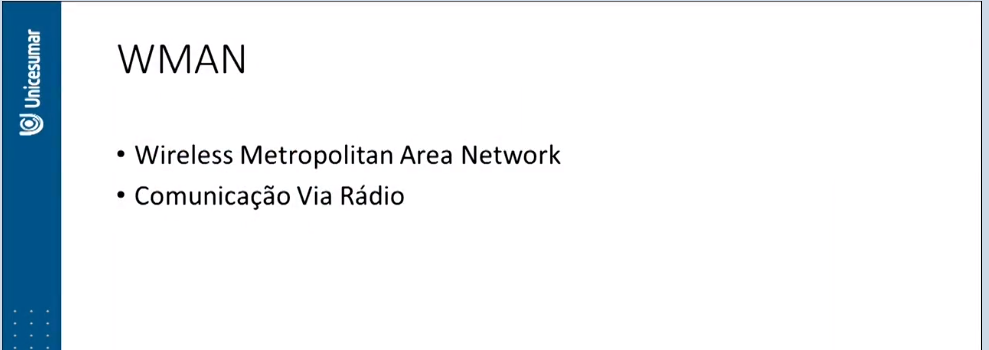As redes WMAN (Wireless Metropolitan Area Network) são semelhantes às redes metropolitanas, mas agora são sem fio e têm um alcance de alguns quilômetros. A comunicação via rádio é predominante nesse tipo de rede.
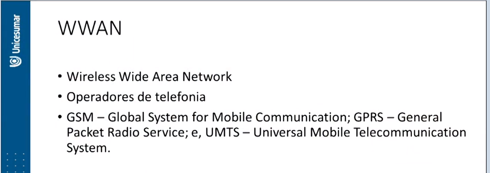As redes WWAN (Wireless Wide Area Network), também conhecidas como redes celulares móveis, são usadas para pacotes de internet pelas operadoras de telefonia. Suas principais tecnologias incluem GSM (Global System for Mobile Communication), GPRS (General Packet Radio Service) e UMTS (Universal Mobile Telecommunication System). A tecnologia mais amplamente usada atualmente é o GSM, que evoluiu do sinal 2G para o 4G devido ao avanço das telecomunicações.